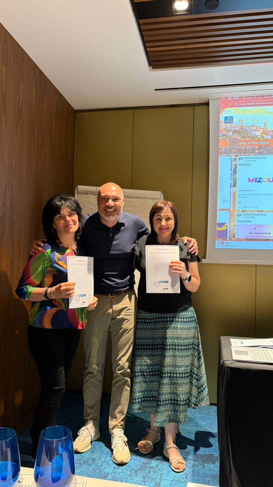

Proiectul L.I.F.E.
Acreditare Erasmus+ 2024-2027
Learning Intelligently For Evaluations. Recunoscută ca Școală Europeană, școala noastră răspunde provocărilor actuale: reducerea anxietății la teste, integrarea digitală și formarea unor cetățeni responsabili.
Mobilități europene pentru 15 profesori și 10-12 elevi, Clubul Eco Ambasadorilor, proiectul eTwinning „Learning Together Through Games” și o platformă digitală cu resurse educaționale deschise.
-
Reducerea anxietății
Abordări prietenoase și tehnici moderne împotriva stresului la teste și evaluări naționale.
-
Incluziune și CES
Integrarea reală a elevilor cu cerințe educaționale speciale și prevenirea abandonului școlar.
-
Digital
Utilizarea bazelor de date digitale și a tehnologiei moderne în procesul de evaluare.
-
Eco
Eco Ambasadori și conștientizare ecologică pentru un viitor sustenabil.